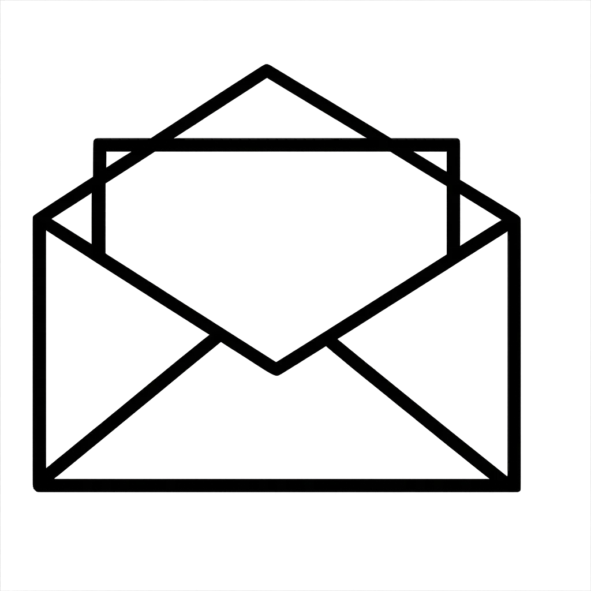
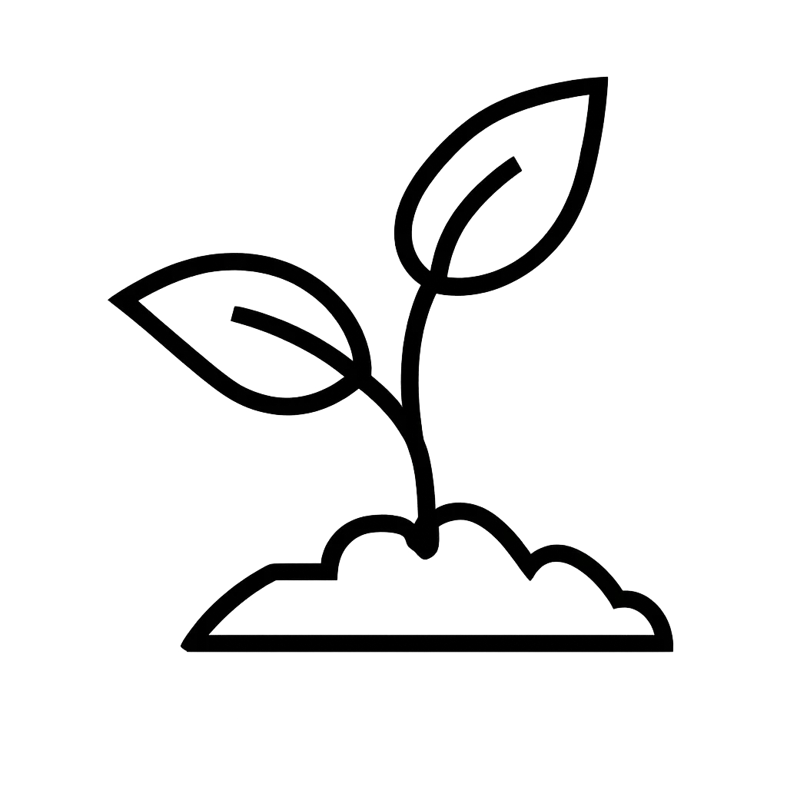
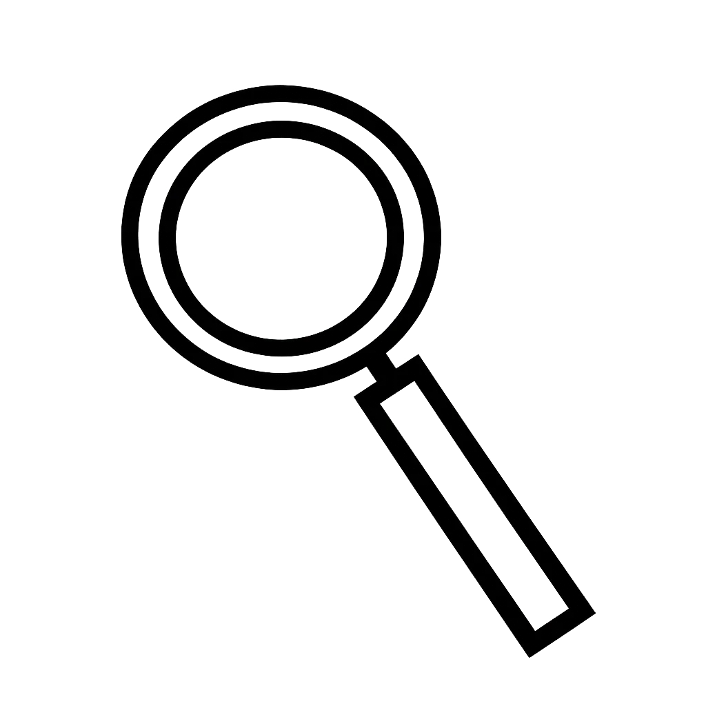

OM OS
Gør en forskel gennem dine betalinger
Dankort Øremærket gør det muligt at støtte dansk natur gennem de betalinger, du allerede foretager i hverdagen. Når du tilknytter et øremærke til dit Dankort, går en lille del af betalingen automatisk til naturprojekter i Danmark – uden at det koster ekstra for dig.
Konceptet er skabt for at gøre støtte mere enkelt, nærværende og tilgængeligt i hverdagen. I stedet for at være en traditionel donation bliver støtten en naturlig del af de betalinger, du allerede foretager.
Baggrund
Mange unge vil gerne støtte gode formål, men donationer kan ofte føles fjerne eller svære at mærke i hverdagen. Derfor arbejder konceptet med at gøre brugerens impact mere synlig og personlig gennem storytelling, fællesskab og løbende indblik i de projekter støtten er med til at skabe.
I vores koncept har vi valgt at tage udgangspunkt i natur og naturprojekter for at skabe en mere nærværende og relevant oplevelse for målgruppen 18–28 år. Her får brugeren mulighed for at følge sin impact og se, hvordan små handlinger i hverdagen kan være med til at gøre en forskel over tid.

Det får du i nyhedsbrevet

Månedlige opdateringer
Få indblik i nye projekter og resultater fra Dankort Øremærket.

Inspiration til hverdagen
Tips og idéer til små handlinger, der gør en stor forskel.

Indblik i projekter
Kom tæt på historierne bag din støtte og se forskellen i praksis.